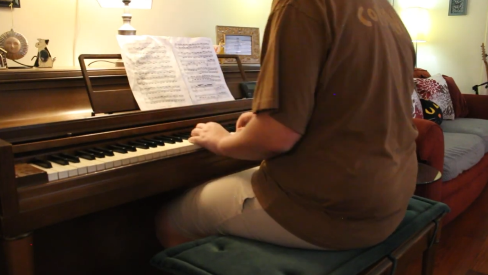
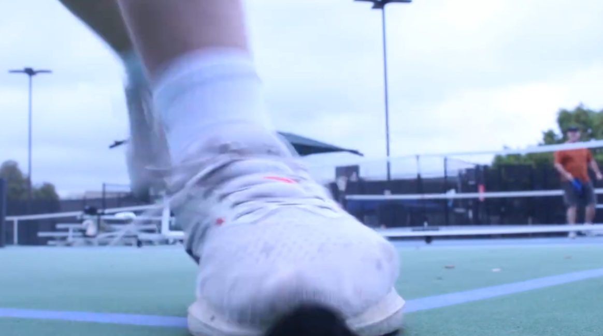
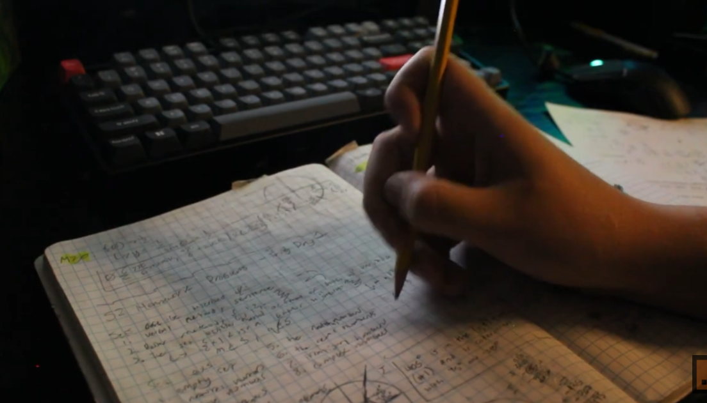
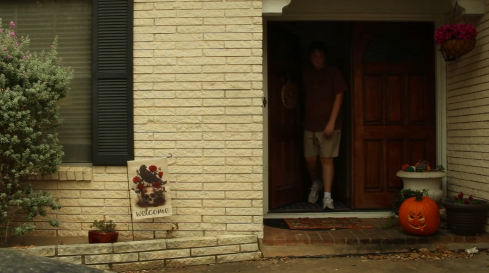
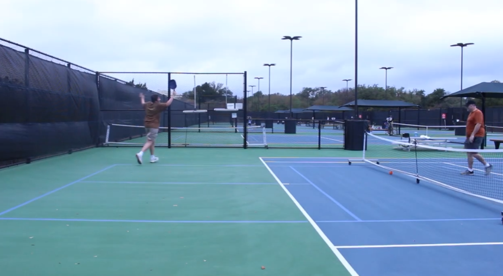
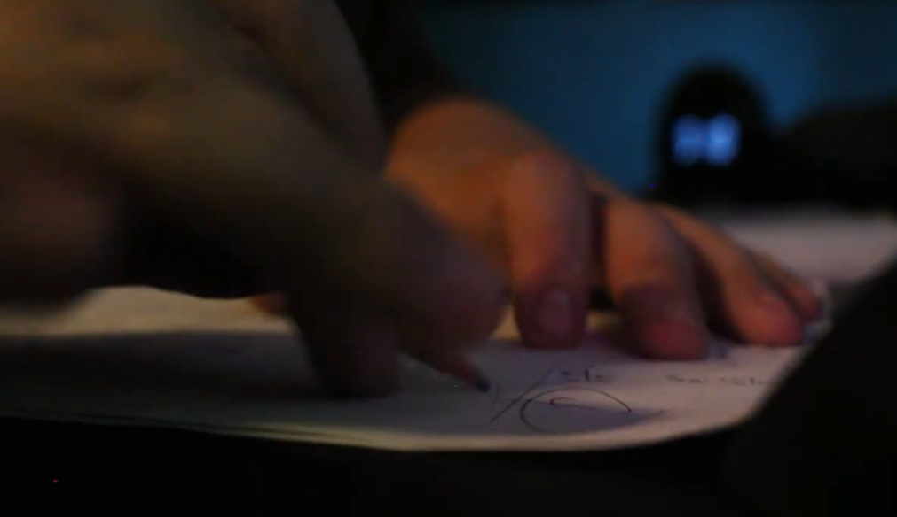

Fleeting Hours is a microfilm, built around one piece of music and a day in my life. The film opens with me waking up and playing Bach's Prelude and Fugue No.2 from the Well-Tempered Clavier on piano. The music continues as I cut through to the rest of the day: pickleball outside with my dad, logging into AISD on the computer, and grinding out math problems. It ends back at the piano, the song winding down, sustaining the last note, and then sleep.
I was learning that Bach piece with my piano teacher Angelo Lembesis, at the time it was filmed, which is part of why it felt right to use. The music doesn't stop between scenes. It becomes the thread connecting all these different parts of a day that don't obviously belong together, its fast pace adding meaning and emotion: you could feel my heart beating fast during pickleball and my mind racing fast working.
This was one of my first films made individually for my AVP class. No crew, no supervisors, just my camera, and a piece of music I was in the middle of learning. I think it accurately depicts my life, and since it was my introduction to film it holds a special place in my heart.

bach, prelude no.2
pickleball
grinding math problems
leaving the house
celebrating a win with dad
writing at night
the cliché opening — 8:14am